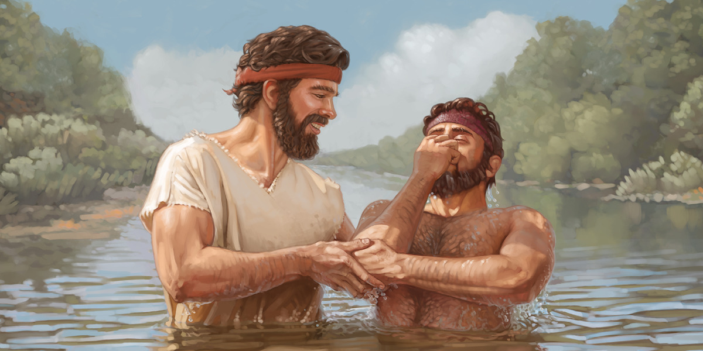

BACK
John The Baptist

John the Baptist was an ascetic Jewish prophet known in Christianity as the forerunner of Jesus. John preached about God's Final Judgment and baptized repentant followers in preparation for it. Jesus was among the recipients of his rite of baptism.
Sample Baptist Scenario